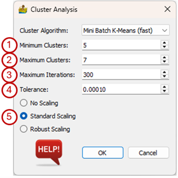
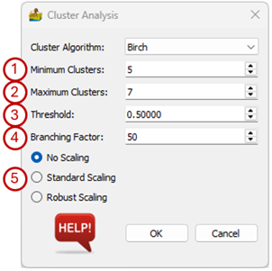

Cluster Analysis¶
The tool uses clustering methodologies implemented by the scikit-learn team and detailed information on the algorithms can be found on their website (https://scikit-learn.org). This clustering is unsupervised, meaning that a multiple band dataset is supplied, and regions of the dataset is automatically grouped into classes.
Six clustering algorithms are available and the options on the Cluster Analysis dialog box vary depending on the selected algorithm:
Mini Batch K-means(fast)
K-means
Bisecting K-means
DBSCAN
OPTICS
Birch
The three K-means algorithms have the same options:
Cluster Algorithm – Choose between Mini Batch K-means (fast), K-means and Bisecting K-means. The difference between the K-means and Bisecting K-means results are shown below.
Minimum Clusters – Clustering can be done for a specific number of clusters or for a range of clusters. This option sets the minimum number of clusters that will be generated.
Maximum Clusters – The maximum number in the range of clusters that will be generated. For example, if the minimum number of clusters is 5, and the maximum number of clusters is 7, then 3 interpretations are produced, namely one with 5 classes, one with 6 classes and one with 7 classes.
Maximum iterations – Maximum number of iterations to use when generating a solution.
Tolerance – Refers to the relative tolerance with regards to inertia to declare convergence and stop iterating. When the relative decrease in the objective function between iterations is less than the given tolerance value, this results in the stopping of the iterations.
Scaling – The data can be scaled as a preprocessing step. The three options are:
No Scaling – The input data are used as is.
Standard Scaling - Standardize features by removing the mean and scaling to unit variance.
Robust Scaling – Scale features using statistics that are robust to outliers.


The options for the DBSCAN (Density-Based Spatial Clustering of Applications with Noise) algorithm are:
eps – The maximum distance between two samples for them to be considered as in the same neighbourhood.
Minimum samples –The number of samples (or total weight) in a neighbourhood for a point to be considered as a core point. This includes the point itself.
Scaling – The data can be scaled as a preprocessing step. The three options are:
No Scaling – The input data are used as is.
Standard Scaling - Standardize features by removing the mean and scaling to unit variance.
Robust Scaling – Scale features using statistics that are robust to outliers.

Options for the OPTICS (Ordering Points To Identify the Clustering Structure) algorithm are:
Minimum samples – The number of samples (or total weight) in a neighbourhood for a point to be considered as a core point. This includes the point itself.
Xi – The minimum reachability steepness that defines a cluster boundary.

Options for the Birch algorithm are:
Minimum Clusters – Clustering can be done for a specific number of clusters or for a range of clusters. This option sets the minimum number of clusters that will be generated.
Maximum Clusters – The maximum number in the range of clusters that will be generated. For example, if the minimum number of clusters is 5, and the maximum number of clusters is 7, then 3 interpretations are produced, namely one with 5 classes, one with 6 classes and one with 7 classes.
Tolerance – The radius of the subcluster obtained by merging a new sample and the closest subcluster should be less than the threshold otherwise a new subcluster is started. Setting this value to be very low promotes splitting and vice-versa.
Branching Factor – Maximum number of Clustering Feature subclusters in each node. If a new sample enters such that the number of subclusters exceed the branching factor then that node is split into two nodes with the subclusters redistributed in each. The parent subcluster of that node is removed and two new subclusters are added as parents of the two split nodes.
Scaling – The data can be scaled as a preprocessing step. The three options are:
No Scaling – The input data are used as is.
Standard Scaling – Standardize features by removing the mean and scaling to unit variance.
Robust Scaling – Scale features using statistics that are robust to outliers.

References¶
Scikit-learn. 2019. scikit-learn: machine learning in Python — scikit-learn 0.21.2 documentation. [ONLINE] Available at https://scikit-learn.org/stable/index.html. [Accessed 12 June 2019]. Scikit-learn: Machine Learning in Python, Pedregosa et al., JMLR 12, pp. 2825-2830, 2011.